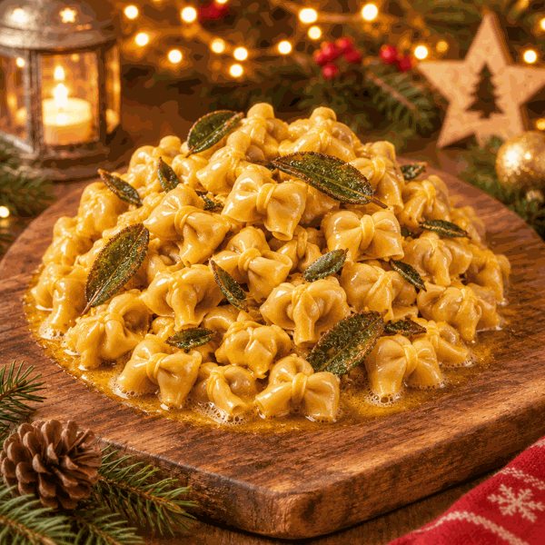

Todas as receitas › Verona
As Festas de Tavolata: Verona
Tortellini de Valeggio
Em Valeggio sul Mincio, perto de Verona, esses tortellini fininhos também se chamam «nó de amor»: todo ano, em junho, monta-se uma mesa enorme na ponte Visconteo para comê-los todos juntos.
Porções6
Preparo1 h 30 min
Cozimento18 min
Descanso30 min
DificuldadeDifícil
Alérgenos: Glúten, Ovos, Leite

Ingredientes
- Farinha de trigo · 300 g
- Ovos (massa) · 3
- Carne moída (boi, porco, frango) · 300 g
- Vinho tinto · 3 colheres de sopa
- Parmesão ralado · 50 g
- Ovo (recheio) · 1
- Noz-moscada · 1 pitada
- Manteiga · 80 g
- Sálvia · 8 folhas
Passo a passo
- Recheio: doure a carne moída num pouco de manteiga, regue com o vinho tinto e cozinhe 15 minutos; depois de fria, junte parmesão, ovo e noz-moscada.
- Sove a farinha com os ovos e deixe descansar 30 minutos; depois abra uma massa bem fina, quase transparente.
- Corte quadradinhos de uns 3 cm, coloque bem pouco recheio, feche em triângulo e una as pontas em volta do dedo: eles devem ser pequenos e finos.
- Cozinhe os tortellini em água salgada por 2 a 3 minutos e tempere com manteiga derretida e sálvia, ou sirva no caldo.
A dica do chef. Enfarinhe levemente a bandeja onde coloca os tortellini, para não grudarem enquanto prepara os outros.
Prepare esta receita também em Tavolata
No jogo você combina ingredientes, completa pedidos e restaura cidades italianas, de Firenze a Milano. Grátis, com receitas verdadeiras no Livro de receitas.
Baixar na App Store